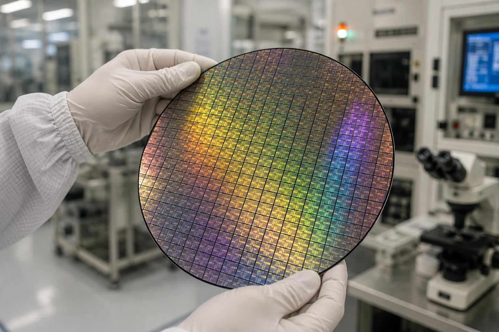
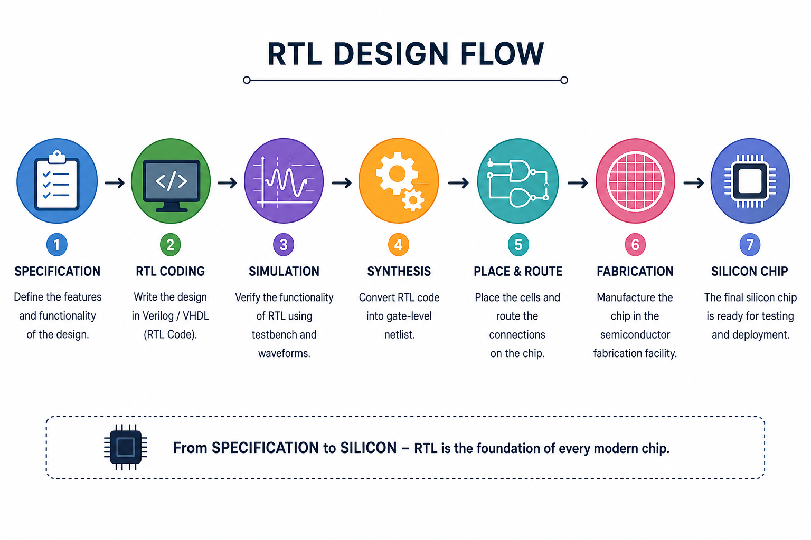
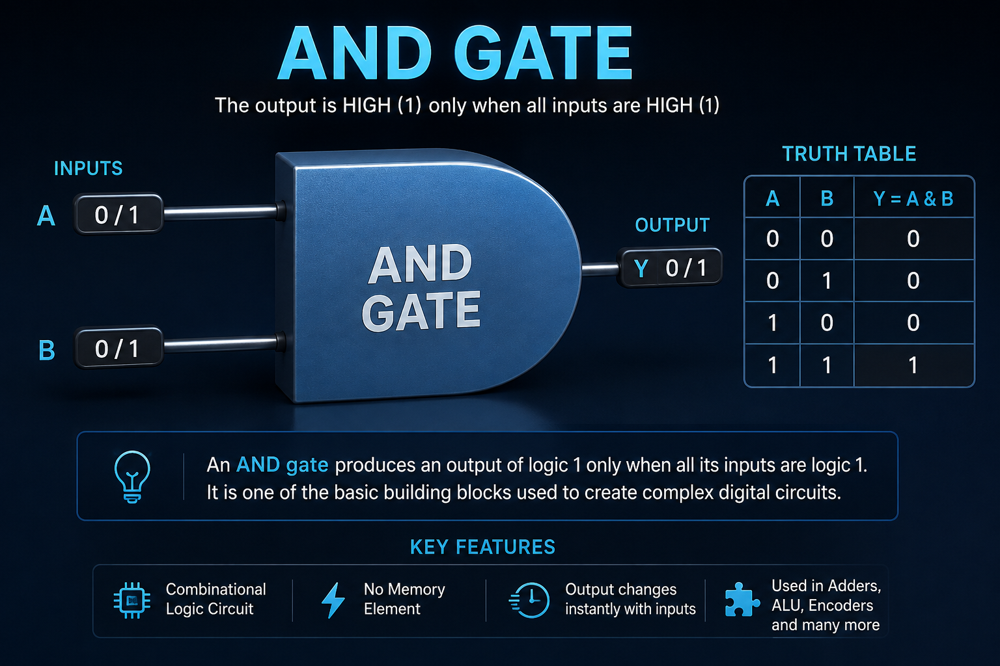

Understand the foundation of digital hardware design and why RTL is the language of modern chips.
1 of 40
15 Minutes
Beginner
No Prior Knowledge Required
After completing this lesson you will be able to:
Understanding Register Transfer Level Design.
Figure 1: RTL engineers describe digital hardware using Verilog or VHDL before silicon manufacturing.
Register Transfer Level (RTL) is a hardware design abstraction used to describe how digital circuits transfer data between registers and perform logical operations during each clock cycle.
RTL is usually written using Hardware Description Languages (HDLs) such as Verilog and VHDL. Engineers use RTL to describe digital systems before synthesis converts the design into logic gates.
Every modern ASIC begins as RTL.
RTL is synthesized into FPGA logic resources.
Processors, NPUs and GPUs are designed using RTL.

Figure 2: RTL is ultimately converted into billions of transistors fabricated on a silicon wafer.
The RTL design process transforms an idea into a real silicon chip. Every modern processor from AMD, Intel, NVIDIA, Apple, Qualcomm, and other semiconductor companies follows a similar development flow.

Figure 1: RTL Design Flow from Specification to Silicon.
One of the simplest combinational logic circuits used in RTL design.

The AND gate is one of the most fundamental combinational logic gates in digital electronics. It produces a logic HIGH (1) only when every input is HIGH (1). In RTL design, AND gates are the building blocks used to create larger digital circuits such as adders, multiplexers, ALUs, CPUs, memory controllers, and AI accelerators. Understanding the AND gate is the first step toward mastering digital logic and RTL design.
module and_gate(
input a,
input b,
output y
);
assign y = a & b;
endmodule
Run this RTL example directly on EDA Playground with a preloaded design and testbench.
▶ Run on EDA PlaygroundNote: You may need to sign in to your EDA Playground account to run the simulation and view the output. If you don't have an account, you can create one for free.
Professional RTL engineers spend a significant amount of time writing
testbenches, running simulations, and debugging waveforms before a design
is synthesized. Understanding simulation results is one of the most
important skills in digital design.
👉 Click "Run on EDA Playground" above to simulate this design,
observe the output, and gain hands-on experience with RTL verification.
Write a Verilog module for a 2-input OR gate and simulate its output for all input combinations.